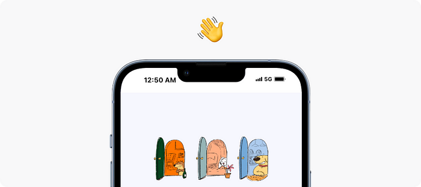
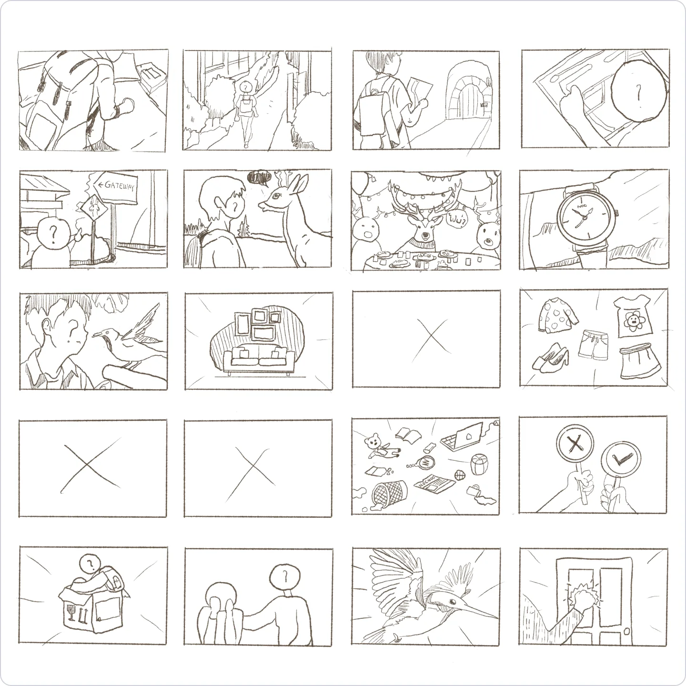
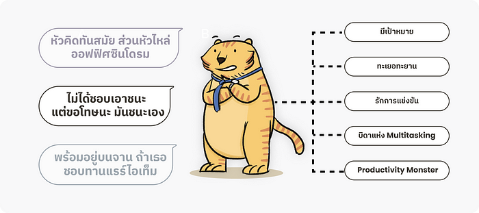
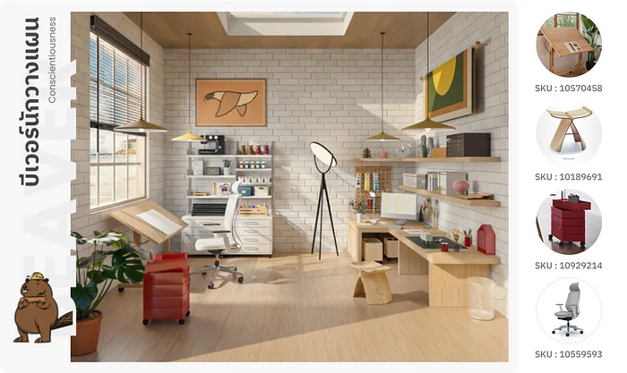
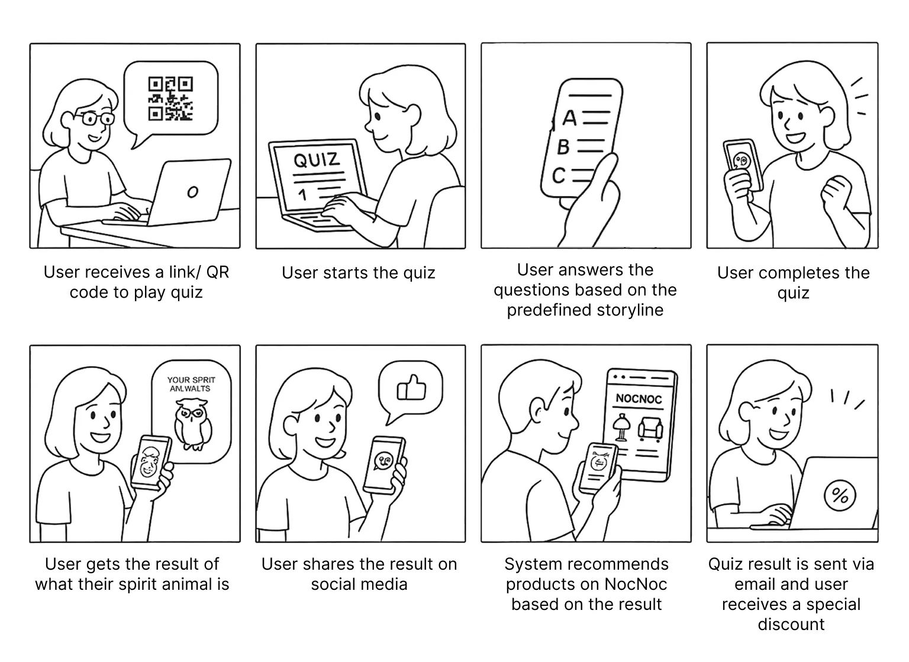
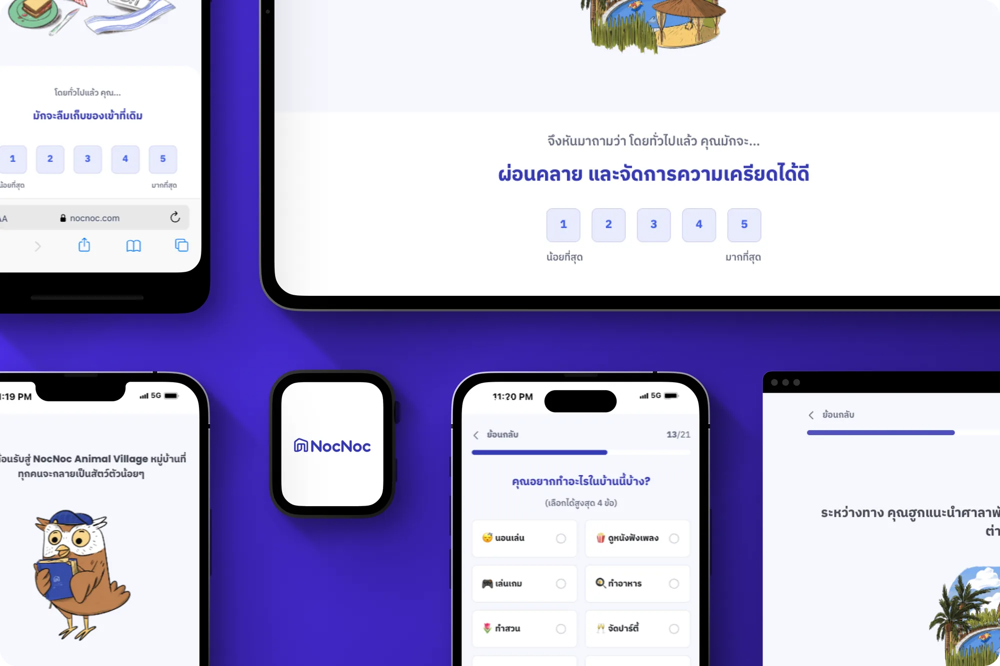

Quiz - แบบทดสอบบุคลิกภาพ
หาสไตล์บ้านที่ใช่สำหรับคุณ กับ Personality Quiz ของ NocNoc ที่เล่นง่ายและสนุก!
ภาพรวมโปรเจกต์

NocNoc Personality Quiz เป็นเครื่องมือแบบ interactive ที่ช่วยให้ผู้ใช้ค้นพบสไตล์แต่งบ้านที่ใช่ จากบุคลิกของตัวเอง ผู้ใช้ตอบคำถามสนุกๆ ไปทีละข้อ แล้วจะได้คำแนะนำสไตล์และสินค้าจากแพลตฟอร์ม NocNoc ที่เหมาะกับตัวเอง เป้าหมายคือสร้างประสบการณ์ที่สนุกและใช้ง่าย เชื่อมตัวตนของผู้ใช้เข้ากับการแต่งบ้าน เพิ่ม engagement และช่วยให้ผู้ใช้เจอสินค้ามากขึ้น
ในบทความนี้ เราจะเล่าเฉพาะส่วน UX Research ของโปรเจกต์
ถ้าอยากดูรายละเอียดกระบวนการของทั้งโปรเจกต์ ตามไปอ่านฉบับเต็มได้ที่ Medium.
UX Session

UX Case Study: Workshop ร่วมกับ Stakeholder
เพื่อให้ทุกทีมเห็นตรงกันและให้โปรเจกต์ NocNoc Quiz ได้ผลมากที่สุด เราจัด workshop ร่วมกันแบบมีโครงสร้าง 12 ครั้ง กับ stakeholder หลัก ทั้ง product owner ดีไซเนอร์ นักการตลาด และ developer แต่ละเซสชันต่อยอดจากครั้งก่อน ทำให้เรากำหนด ปรับ และ validate ประสบการณ์ของควิซได้ จาก insight และความเชี่ยวชาญของทุกคน
รายละเอียดแต่ละเซสชัน
- กำหนดเป้าหมายและ Metrics วางเป้าหมายหลัก ตัวชี้วัดความสำเร็จ (engagement, conversion, การเก็บข้อมูล) ไทม์ไลน์ และการแบ่งทรัพยากร
- ตกลง Tone และ Persona กำหนดอารมณ์และโทนของควิซ แล้ว map Persona เป้าหมายทั้งหมด พร้อม touchpoint ด้านพฤติกรรมของแต่ละกลุ่ม
- คิดเนื้อเรื่อง ช่วยกันสร้างเนื้อเรื่องของควิซ และทำให้ชัดว่า User Journey ควรให้ความรู้สึกแบบไหน รวมถึงสิ่งที่ผู้ใช้จะได้กลับไป
- รีเสิร์ชโมเดล ศึกษาตรรกะและโมเดลทางจิตวิทยาเบื้องหลังควิซ ให้ผลแม่นและตรงกับบุคลิก
- วางแผนทดสอบตรรกะ ออกแบบการทดสอบกับผู้ใช้จริง เพื่อดูว่าผลควิซสะท้อนบุคลิกจริงหรือไม่
- วางโครง Story Flow วางลำดับเนื้อเรื่อง บทบาทของตัวละคร และบทพูดหรือ copy ประกอบ
- วางแผน Visual Concept ดีไซเนอร์และ stakeholder ช่วยกันออกแบบตัวละคร ฉาก และภาพประกอบหน้าผลควิซ
- ทดสอบการรับรู้เนื้อเรื่อง ประเมินว่าเนื้อเรื่องโดนใจผู้ใช้ และสื่อสารสิ่งที่ตั้งใจได้หรือไม่
- UI Design และ Handoff ให้ Developer สรุปและทำเอกสาร UI component ให้ developer นำไปพัฒนาต่อได้สะดวก
- หน้าผลลัพธ์ + UX Validation ออกแบบตรรกะการแสดงผลลัพธ์ แล้วทดสอบกับผู้ใช้ให้มั่นใจว่าเข้าใจง่ายและน่าประทับใจ
- จับคู่สินค้าแนะนำ จับคู่ Persona สัตว์ประจำตัวแต่ละตัว กับ SKU สินค้าที่คัดมา เพื่อให้แนะนำได้ตรงจุด
- ออกแบบฉากห้องด้วย AI วางแผนว่า AI จะแสดงสินค้าแนะนำออกมาเป็นภาพห้องตามธีมของแต่ละ Persona อย่างไร

ปัญหาและทางแก้
Feedback มาได้จากทุกทิศทาง มาแบบไม่ทันตั้งตัว หนักหน่วง และเปลี่ยนทั้งโปรเจกต์ได้เลย แต่จริงๆ แล้วมันคือโอกาสทองที่จะได้เข้าใจว่าผู้ใช้อยากได้อะไรจากควิซจริงๆ ในโพสต์นี้เราเลยอยากเล่า feedback สำคัญที่ได้ระหว่างทดสอบ วิธีที่เราแก้ และรายละเอียดเล็กๆ ที่น่ารักซึ่งเราใส่ไว้ในดีไซน์สุดท้าย
Feedback: ผู้เล่นอยากเข้าใจตัวเองและผลควิซของตัวเองมากขึ้น
สิ่งที่เราทำ:
เราเพิ่ม tagline ประจำตัวและคีย์เวิร์ดสั้นๆ ที่สรุปบุคลิกของแต่ละตัวละครให้ชัด ง่ายพอที่จะเข้าใจได้ในแวบเดียว
เพื่อให้รู้สึกเป็นของตัวเองมากขึ้น เราเพิ่ม “Power Graph” ไว้ที่หน้าผลลัพธ์ คำนวณจากคำตอบของผู้ใช้แต่ละคน ถึงสองคนจะได้ตัวละครเดียวกัน กราฟก็จะไม่เหมือนกัน ช่วยย้ำให้เห็นว่าแต่ละคนมีความเป็นตัวเอง

Feedback: ผู้ใช้อยากเห็นภาพห้องจริง จะได้นึกภาพสไตล์ที่ถูกแนะนำออก และมีแรงบันดาลใจไปแต่งห้องตัวเอง
สิ่งที่เราทำ:
เราเห็นตรงกันว่าบรรยากาศที่เห็นด้วยตาสื่อสารได้ดีที่สุด Ball (lead concept designer ของเรา) เลยเริ่มสเก็ตช์สไตล์ห้องให้เข้ากับไลฟ์สไตล์ของแต่ละตัวละคร จากนั้น K และ Gift จากทีมกราฟิกก็เปลี่ยนคอนเซปต์เหล่านี้ให้เป็นฉาก 3D ที่ดูแล้วอินไปด้วย
เรายังขยายหน้าผลลัพธ์ให้มีคำอธิบายสไตล์ที่แนะนำละเอียดขึ้น ช่วยให้ผู้ใช้เห็นและรู้สึกถึง vibe ได้ชัดที่สุด

Feedback: ผู้ใช้อยากเห็นเฟอร์นิเจอร์และของแต่งบ้านที่เข้ากับสไตล์ที่ควิซแนะนำ
สิ่งที่เราทำ:
เดิมเราวางแผนไว้แล้วว่าจะใส่สินค้าที่กดซื้อได้ลงในฉากห้อง แต่เราไปไกลกว่านั้นอีกขั้น ตอนนี้ผู้ใช้กรอกอีเมลเพื่อรับลิสต์เฟอร์นิเจอร์ที่คัดมาให้เข้ากับสไตล์ตัวเองได้ด้วย
นอกจากนี้ เรายังทำ landing page แยกไว้โชว์สินค้าแนะนำของทุกตัวละครในควิซ ทั้งแรงบันดาลใจ ช้อปปิ้ง และการแต่งบ้าน อยู่ในที่เดียว ง่ายสุดๆ สำหรับคนรักบ้าน!

ต่อไปคืออะไร?
หลังได้ feedback ที่มีค่าเหล่านี้ เราปรับประสบการณ์จนได้ผลที่น่าพอใจขึ้นมาก ขั้นต่อไป? รวมทุกอย่างเป็นดีไซน์ใหม่ที่เรียบร้อย แล้วทำ Usability Testing อีกรอบสุดท้าย ก่อนส่งต่อให้ dev สุดที่รักของเรานำไปพัฒนา
Service Design
เราอยากให้ โปรเจกต์ NocNoc Quiz เป็นไวรัลบนโซเชียล โดยเน้นผ่าน Instagram Stories โจทย์ท้าทายคือต้อง ทำให้เกิดกระแสไวรัลแบบ organic โดยไม่ใช้งบโปรโมตเลย.
ในขณะเดียวกัน เราตั้งใจจะ เพิ่มการรับรู้แบรนด์ NocNoc ในกลุ่มผู้ใช้ที่เล่นโซเชียลอยู่แล้ว และชอบมีส่วนร่วมกับคอนเทนต์แบบนี้อยู่แล้ว คนกลุ่มนี้ยังเป็นกลุ่มที่ทีมเราอยากเก็บข้อมูลไปทำ data segmentation ด้วย แคมเปญนี้เลยได้หลายอย่าง คือ การมองเห็นแบรนด์ engagement และการเก็บข้อมูล ในครั้งเดียว
เพื่อให้ไปถึงตรงนั้น เราต้อง ออกแบบ service ให้สื่อสาร User Journey ได้ชัด ใช้ง่ายโดยไม่ต้องคิด และ ให้ผู้ใช้ออกแรงน้อยที่สุด เพื่อให้กระจายต่อไปเองแบบ organic และให้คุณค่าจริงทั้งกับผู้ใช้และแบรนด์

UI Concept
ภาพลักษณ์ของ NocNoc Animal Village Quiz ออกแบบให้ดูเป็นมิตร น่าเข้าไปเล่น และชวนให้มีส่วนร่วมแบบไม่ต้องพยายาม สะท้อนทั้งความสนุกแปลกใหม่ของควิซและความอบอุ่นของแบรนด์ NocNoc
